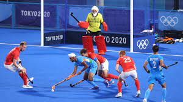
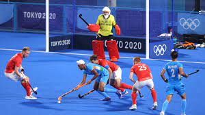

Hockey is a term used to denote various types of both summer and winter team sports which originated on either an outdoor field, sheet of ice, or dry floor such as in a gymnasium.
There are many types of hockey. Some games make the use of skates, either wheeled, or bladed while others do not. In order to help make the distinction between these various games, the word "hockey" is often preceded by another word i.e. "field hockey", "ice hockey", "roller hockey", "rink hockey", or "floor hockey".